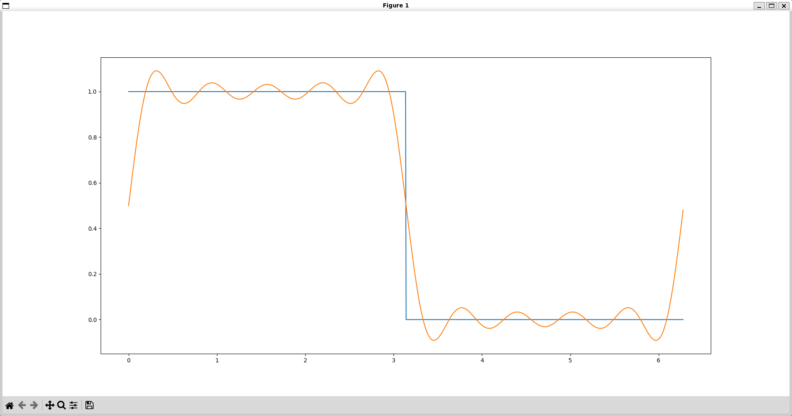

Analog keypad
This was programmed in C using the Raspberry Pi SDK, FreeRTOS kernel, and TinyUSB libary. The circuit schematic was made in KiCad and the switch housing designed in SolidWorks. The keyboard switches have magnets which are detected with hall effect sensors to determine their positions.

Micromouse
This is an autonomous maze-solving robot that uses the stm32 Blue Pill. It uses IR sensors and motor encoders as inputs to the PD algorithm to control its movement. A floodfill algorithm is used to solve the maze. This footage was taken while I was tuning the parameters of the PD controller
Fourier Series approximation
This is a script that finds the fourier series approximation of a function defined in the script and displays it with matplotlib. The number of terms in the fourier series approximation can be tuned to change the accuracy of the approximation.
